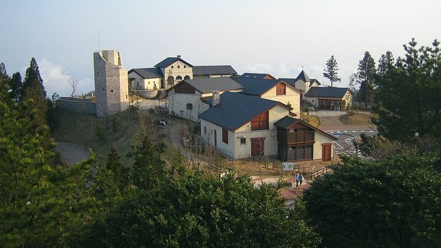

Mount Rokko
六甲山
Mount Rokko (六甲山, Rokkōsan, 931 meters) is the highest peak in the Rokko mountain range, which provides the pleasant green backdrop to the city of Kobe. Panoramic views of the heavily urbanized Hanshin region (Kobe and Osaka) can be enjoyed from the mountain and are particularly spectacular around sunset.
Various small tourist attractions can be found on Mount Rokko, including a botanical garden, a music box museum, a pasture with flowers and sheep, Japan's first golf course and Rokko Garden Terrace, a tourist complex with a few restaurants, shops and an observation deck.
A circular bus line (running in clockwise direction only) connects the various attractions with the top stations of both the Rokko Cablecar (going to central Kobe) and the Rokko Arima Ropeway (going to Arima Onsen).
